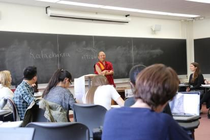

加拿大多伦多大学宗教系问答
『2014年10月29日』
（一）问：佛教中提到的须弥山、四大洲，是怎样一种世界观呢？
答：按照小乘《俱舍论》的观点，世界的中心是须弥山，须弥山周围有七大海洋与七重金山，再往外是咸水海，海中有南瞻部洲等四大洲，须弥山上方是欲界空居天，往上是色界十七层天，再上面是无色界四层天。这种世界观存在于早期佛教，在曼茶罗观修中可以看到。
对于这种世界观，我们可以去了解，但是不能认为它是唯一的，也不能认为它是究竟的。佛教的世界观还有很多，比如《时轮金刚》对宇宙的描述，以及《大乘阿毗达磨》的观点。
之所以出现须弥山为中心的世界观，主要原因是：在当时的印度民间，很多人认为世界就是这种模样，佛陀于是随顺他们宣说了这种观点。佛陀曾说：“世间与我诤，我不与世诤。”世间人承认的有些事，佛陀也会随顺他们而认可，比如很多人认为“我”存在，佛陀虽然深知没有“我”，但是为了调化他们，也会暂时说“我”是存在的。
所以，佛陀的有些教言是度化众生的方便说，是一种应机说法。好比在学校里，东方的教科书为了适应东方人的习俗，跟西方的教科书会有所不同。对于佛陀的方便说，我们可以学习，但是不能认作佛陀的究竟观点。
（二）问：佛教讲一个微尘中有很多世界，这怎么理解？
答：佛教《华严经》中讲“一尘中有尘数刹”——一个微尘中有微尘数那么多的刹土。一般人对此很难接受，其实这没什么不可能，因为世界是空性的，每个法都没有实质，所以一个尘与无数尘的本体没有丝毫质碍，能够相互含摄。如果世界不是空性的，那么一个微尘中，不要说容下无数世界，即使第二个微尘也无法立足。
因此，一旦明白空性的道理，就会知道确实如佛经所说：一就是多、多就是一，显即是空、空即是显。
（三）问：如何证明现实就是梦？
答：汉地古代有一个著名的故事“庄周梦蝶”：庄子梦到自己变成了蝴蝶，突然间醒过来，他不知是庄子梦中变成蝴蝶，还是蝴蝶梦中变成庄子。这个故事寓意很深。
其实，现实世界就是一场梦，为什么呢？
一方面，梦中的一切，到了醒时就荡然无存，而现实中的一切，到了明天也杳无踪迹。所以，昨天之前的事跟昨晚的梦没有差别，明天以后的事跟明晚的梦并无二致。在这方面，藏传佛教里有非常细致的剖析。
我自己有一个习惯：每次遇到不如意的事，就在心里想“它跟昨晚的梦一样，不要太在意”，这种思维确实对调整内心很有帮助。
另一方面，很多佛经中都说：世界以及我们自身都不实有——没有详细观察时，似乎存在；一旦进行观察，跟梦境、幻化、泡影毫无差别。
如果明白了现实与梦无别的道理，生活中就不会有很强烈的执著。
（四）问：我曾读到一篇文章，里面说罗马天主教教皇证实了大爆炸理论。一位如此重要的宗教领袖公开支持这种理论，您对此有什么看法？
答：其实对于大爆炸理论，科学家目前仍处在探索阶段。
支持大爆炸理论的证据之一就是宇宙在不断膨胀，但是目前有科学家发现宇宙可能正在收缩。关于大爆炸的发生时间，也众说纷纭，有些说是137亿年前，有些说120亿年前，有些说130多亿年前。因此，大爆炸理论也并非一种定论。
我觉得，科学界在探索宇宙时，借鉴宗教文献是很有必要的。大家都知道，世上的很多宗教都有着久远的历史，有些接近四千年，有些是三千多年，有些是一千多年，这些宗教的古老典籍中很可能找得到宇宙学方面的珍贵资料。即使研究者本人没有信仰，也完全可以借鉴这些资料，因为凡是真理都值得追求，不必要因为“宗教”的外表就拒之千里。
其实人生在世，需要有一种探求真理的精神。能否找到真理是另一回事，但不论是学生、老师还是宗教人士，在这样一个自由、平等的世界中，都应该运用智慧挖掘人类文明中的珍宝，寻觅宇宙人生的真相，这非常有意义。

（五）问：您演讲中提到的那位天文学家，他对太阳系的研究远远早于哥白尼和伽利略，能再讲讲他的相关情况吗？还有您提及的佛教文献，能再说一下名称吗？
答：那位天文学家叫阿亚巴札，藏文中有《阿亚巴札覃》这么一个论典。
刚才讲的“恒河沙数世界”，出自《华严经》，还提到的经典有《时轮金刚》《花鬘续》。这几个现在都有藏文版本。
（六）问：生活在世俗的世界中，该如何对待执著？
答：该执著时可以执著，但是不能过分，因为过分的执著会引发痛苦。
大概六百多年前，藏地有一位尊者叫龙钦巴，他说：“执著越大，痛苦越多。”当然，作为世间人，对事业的适当希求、对真善美的追求等等，暂时无法舍弃，也不用舍弃。但是如果对感情、财富等过分贪执，就会带来很多负面作用——自己的心情会越来越糟，身体会越来越差，所做的事情也常常无法成功。
（七）问：我们学习的课本中说“佛陀在定中获得阿罗汉果”，为什么佛陀获得的不是佛果？
答：按照声闻乘的有些说法，佛陀获得的是大阿罗汉果，因为他们不承认断除一切障垢的佛果，但认为大阿罗汉果存在，佛陀是大阿罗汉。不过，从大乘的角度看，佛陀并没有经历阿罗汉的阶位，而是经由大乘五道十地直接取证了佛果。